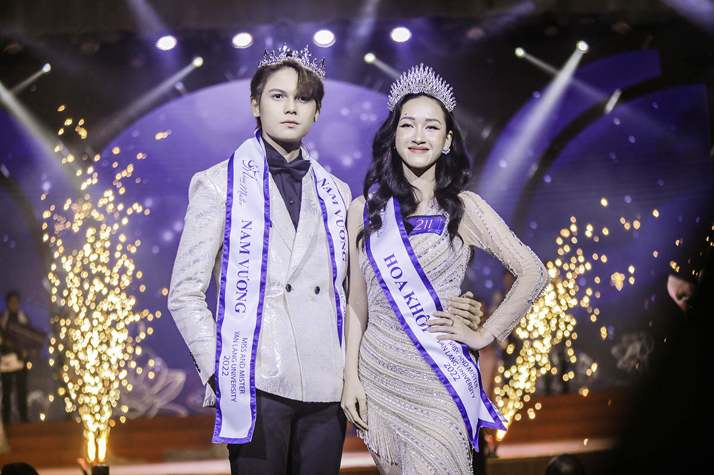

Với phần thi hùng biện, 18 thí sinh chia thành 3 nhóm nhỏ, mỗi nhóm gồm 6 bạn, lần lượt hùng biện với 3 chủ đề ngẫu nhiên: Văn hóa của sinh viên Văn Lang nói chung và trách nhiệm của sinh viên Văn Lang đối với văn hóa nhà trường; Là một phần của thế hệ trẻ, bạn sẽ làm gì để đóng góp cho quê hương đất nước; Trách nhiệm của sinh viên đối với hoạt động cộng đồng và hoạt động xã hội. Phát biểu khai mạc đêm Chung kết, PGS. TS. Trần Thị Mỹ Diệu - Hiệu trưởng Trường Đại học Văn Lang chia sẻ: “Miss & Mister Văn Lang là một chương trình được tổ chức thường niên tại VLU. 18 thí sinh vào Vòng Chung kết hôm nay là kết quả được chắt lọc kỹ càng từ các vòng thi và các thử thách khác nhau, rèn luyện để các bạn hoàn thiện thêm nhiều kỹ năng. Nhà trường mong muốn rằng, sau khi gia nhập cộng đồng sinh viên Văn Lang, các bạn sẽ có được nhiều trải nghiệm quý báu, tạo cho mình một nền tảng kiến thức vững chắc, trở thành con người toàn diện và là phiên bản hoàn hảo nhất của chính bạn”. Dưới sự đánh giá của các giám khảo, 18 thí sinh trong đêm Chung kết lần lượt bước vào các vòng thi trình diễn trang phục dân tộc Áo dài, hùng biện, trình diễn trang phục dạ hội và ứng xử. BST Áo dài dành cho các thí sinh đến từ NTK Việt Hùng - Thương hiệu áo dài nổi tiếng trong cả nước, tôn vinh sắc vóc, thể hiện tình yêu với nét đẹp trang phục truyền thống của dân tộc.
